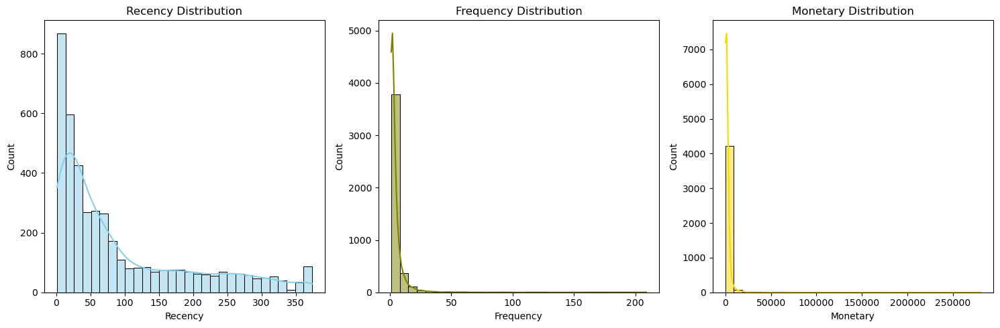
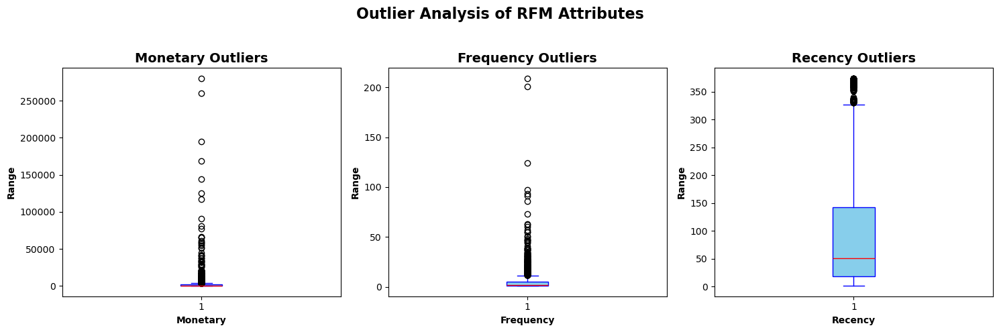

Project Walkthrough: Customer Segmentation
Welcome to the project! Let's build a real-world marketing engine.
The Mission
Imagine you just got hired as the Lead Data Scientist for a massive online gift retailer. The marketing director comes to your desk and drops a massive hard drive containing 500,000 receipts from the past year.
"We want to send 20% off coupons to our VIPs, and 'We Miss You' emails to people who stopped shopping with us," she says. "But we have no idea who is who. Can you group them for us?"
- 🧹 Data Cleansing: Handling Missing Data & Negative Values
- ⚙️ Feature Engineering: The RFM Framework
- 📏 Standard Scaling: Capping Outliers & Normalizing
- 📉 The Elbow Method: Finding the Optimal K
- 🤖 K-Means Clustering: Executing the Model
Since we don't have labels, we can't use Classification. We have to use Clustering. Let's walk through exactly how we solve this, step-by-step.
Step 1: Taking out the Trash
If you look closely at the receipts, some are totally broken. Some don't have a Customer ID (so we can't email them anyway!), and some have a "Negative" price because the customer returned the item. If we feed returned items into our algorithm, it's going to get very confused! So, our very first step is to delete the broken receipts.
Step 2: Squishing the Data (The RFM Trick)
We can't just feed raw receipts into a clustering algorithm. A customer might have 50 receipts, and another might have 1. How do we compare them?
Marketers use a famous trick called RFM. We take all 50 receipts for a customer and squish them into exactly three numbers:
- R (Recency): How many days has it been since they last bought something?
- F (Frequency): How many times have they ordered in total?
- M (Monetary): What is the total amount of money they've spent?
Now, every single customer is perfectly described by just 3 numbers!
Step 3: Leveling the Playing Field
Here is a massive trap: Someone's "Monetary" score might be $5,000, but their "Frequency" is only 12 orders. K-Means measures distance using rulers. If it sees the number 5,000, it's going to think Money is the ONLY thing that matters, completely ignoring Frequency!
To fix this, we use a Scaler. This acts like a magic shrink ray that forces all three numbers (R, F, and M) to be on the exact same scale, so K-Means treats them fairly.
Step 4: The Guessing Game
How many groups of customers do we actually have? 3? 4? 10? We run K-Means multiple times and plot the "Error" on a graph. We look for the "Elbow" (where the line bends). In our case, the elbow bends perfectly at 4!

How to read this: See how the line crashes down like a steep cliff, and then flattens out at number 4? That corner is the "elbow"! It tells us 4 is the perfect number of groups.
Step 5: Labeling the VIPs
We tell K-Means to group everyone into 4 buckets. But K-Means doesn't know what the buckets mean; it just calls them Group 0, 1, 2, and 3.
To finish our project, we look at the average scores for each group. We see that Group 3 spent the most money and bought most frequently—those are our VIPs! Group 1 has a huge Recency score (meaning they haven't bought anything in hundreds of days)—those are our Lost Customers. Mission accomplished!

How to read this: Dark blue means "High" and light yellow means "Low". Look at the bottom row (Cluster 3): it's dark blue for Frequency and Money. Those are our VIPs!
Welcome to the technical walkthrough. Today we are building an end-to-end unsupervised learning pipeline using the Online Retail dataset from UCI (541K rows). Our goal is to transform raw, unstructured transaction logs into actionable marketing segments.
1. Data Cleansing: Garbage In, Garbage Out
If you feed raw transactions into an algorithm, you will cluster noise. Here is how we clean it up:
- Missing Data: A row without a
CustomerIDbelongs to an anonymous guest. We can't send them an email, so we drop them. - Negative Numbers: E-commerce datasets often use negative
Quantityvalues to represent canceled orders or returns. We must filter these out so they don't skew our math. - Creating Revenue: The dataset gives us Quantity and UnitPrice, but we need the total revenue per transaction (
TotalPrice) to build our monetary feature later.
import pandas as pd
# Load the dataset
data = pd.read_csv('OnlineRetail.csv', encoding='cp1252', header=0)
# Drop rows where CustomerID is NaN
data.dropna(subset=['CustomerID'], inplace=True)
# Filter out returns and data entry errors
data = data[(data['Quantity'] > 0) & (data['UnitPrice'] > 0)]
# Create the monetary basis for our future RFM calculation
data['TotalPrice'] = data['Quantity'] * data['UnitPrice']
data.head()
| InvoiceNo | StockCode | Description | Quantity | InvoiceDate | UnitPrice | CustomerID | Country | |
|---|---|---|---|---|---|---|---|---|
| 0 | 536365 | 85123A | WHITE HANGING HEART T-LIGHT HOLDER | 6 | 12/1/2010 8:26 | 2.55 | 17850.0 | United Kingdom |
| 1 | 536365 | 71053 | WHITE METAL LANTERN | 6 | 12/1/2010 8:26 | 3.39 | 17850.0 | United Kingdom |
| 2 | 536365 | 84406B | CREAM CUPID HEARTS COAT HANGER | 8 | 12/1/2010 8:26 | 2.75 | 17850.0 | United Kingdom |
| 3 | 536365 | 84029G | KNITTED UNION FLAG HOT WATER BOTTLE | 6 | 12/1/2010 8:26 | 3.39 | 17850.0 | United Kingdom |
| 4 | 536365 | 84029E | RED WOOLLY HOTTIE WHITE HEART. | 6 | 12/1/2010 8:26 | 3.39 | 17850.0 | United Kingdom |
2. Feature Engineering: The RFM Framework
We cannot cluster at the "transaction" level; we must cluster at the "customer" level. We do this by collapsing 500,000 transaction rows into ~4,300 unique customer rows using Pandas groupby() and agg() (aggregate). We calculate three metrics:
- Recency: We set a "reference date" (pretending it's today). We find the customer's most recent purchase date (
max()), subtract it from today, and extract the number of days. - Frequency: We count the number of unique invoices (
nunique) attached to this customer. - Monetary: We add up (
sum) all theTotalPricerows for this customer.
# Set our "today" anchor to 1 day after the latest transaction in the dataset
data['InvoiceDate'] = pd.to_datetime(data['InvoiceDate'])
reference_date = data['InvoiceDate'].max() + pd.Timedelta(days=1)
# Collapse 500k transactions down to ~4,300 unique customers!
rfm = data.groupby('CustomerID').agg(
Recency=('InvoiceDate', lambda x: (reference_date - x.max()).days),
Frequency=('InvoiceNo', 'nunique'),
Monetary=('TotalPrice', 'sum')
).reset_index()
rfm.head()
# Visualize the distribution of our new RFM features
import seaborn as sns
import matplotlib.pyplot as plt
fig, axes = plt.subplots(1, 3, figsize=(15, 5))
sns.histplot(rfm['Recency'], bins=30, kde=True, ax=axes[0], color="skyblue")
axes[0].set_title('Recency Distribution')
sns.histplot(rfm['Frequency'], bins=30, kde=True, ax=axes[1], color="olive")
axes[1].set_title('Frequency Distribution')
sns.histplot(rfm['Monetary'], bins=30, kde=True, ax=axes[2], color="gold")
axes[2].set_title('Monetary Distribution')
plt.show()
| CustomerID | Recency | Frequency | Monetary | |
|---|---|---|---|---|
| 0 | 12346.0 | 326 | 1 | 77183.60 |
| 1 | 12347.0 | 2 | 7 | 4310.00 |
| 2 | 12348.0 | 75 | 4 | 1797.24 |
| 3 | 12349.0 | 19 | 1 | 1757.55 |
| 4 | 12350.0 | 310 | 1 | 334.40 |
Visual Output: RFM Distribution

3. Outlier Handling & Standard Scaling
Here is where most junior data scientists fail: K-Means is incredibly sensitive to scale and outliers. Why? Because K-Means calculates similarity using Squared Euclidean Distance (literally measuring the straight-line distance between data points using a mathematical ruler).
- 1. The Outlier Problem: A "centroid" is just the average (the physical center) of a cluster. If a wholesale customer spent £200,000 while everyone else spent £50, that single massive number will drag the average (the centroid) miles away from the normal users, ruining the cluster. We use the IQR (Interquartile Range) method to cap these extreme "whale" spenders so they don't break the math.
- 2. The Scaling Problem: Imagine measuring distance using
Recency(which ranges from 1 to 365 days) andMonetary(which ranges from £1 to £10,000). Because £10,000 is mathematically so much larger than 365, the algorithm will basically ignore Recency entirely! We fix this usingStandardScaler, which shrinks all columns down so they share the exact same scale (Mean=0, Variance=1). Now, Recency and Monetary get an equal vote!
Visual Output: Outlier Detection

# Visualize outliers with Boxplots
fig, axes = plt.subplots(1, 3, figsize=(15, 5))
for i, attr in enumerate(['Monetary', 'Frequency', 'Recency']):
axes[i].boxplot(rfm[attr], vert=True, patch_artist=True,
boxprops=dict(facecolor="skyblue", color="blue"),
medianprops=dict(color="red"),
whiskerprops=dict(color="blue"),
capprops=dict(color="blue"))
axes[i].set_title(f"{attr} Outliers")
plt.show()
# Remove statistical outliers for Monetary
Q1, Q3 = rfm.Monetary.quantile(0.25), rfm.Monetary.quantile(0.75)
rfm = rfm[(rfm.Monetary >= Q1 - 1.5*(Q3-Q1)) & (rfm.Monetary <= Q3 + 1.5*(Q3-Q1))]
# Remove statistical outliers for Recency
Q1, Q3 = rfm.Recency.quantile(0.25), rfm.Recency.quantile(0.75)
rfm = rfm[(rfm.Recency >= Q1 - 1.5*(Q3-Q1)) & (rfm.Recency <= Q3 + 1.5*(Q3-Q1))]
# Remove statistical outliers for Frequency
Q1, Q3 = rfm.Frequency.quantile(0.25), rfm.Frequency.quantile(0.75)
rfm = rfm[(rfm.Frequency >= Q1 - 1.5*(Q3-Q1)) & (rfm.Frequency <= Q3 + 1.5*(Q3-Q1))]
# Standardize the RFM metrics to improve clustering performance
from sklearn.preprocessing import StandardScaler
scaler = StandardScaler()
rfm_scaled = scaler.fit_transform(rfm[['Recency', 'Frequency', 'Monetary']])
# Convert scaled data to DataFrame for easier handling (matches notebook exactly)
import pandas as pd
rfm_scaled_df = pd.DataFrame(rfm_scaled, columns=['Recency', 'Frequency', 'Monetary'])
4. Hyperparameter Tuning: The Elbow Method
Unsupervised learning doesn't give us the "k" (number of clusters) upfront. We have to discover it. We will run K-Means for k=1 through 10 and record the Inertia.
What is Inertia? It is the total "error" (how far, on average, the points are from their centroids). As we add more clusters, Inertia always goes down. But we want to find the "Elbow"—the point where adding more clusters stops giving us a massive drop in error. This represents the optimal trade-off.
from sklearn.cluster import KMeans
import matplotlib.pyplot as plt
inertia = []
k_range = range(2, 11)
# Run KMeans for k=2 through k=10
for k in k_range:
kmeans = KMeans(n_clusters=k, random_state=42)
kmeans.fit(rfm_scaled_df)
inertia.append(kmeans.inertia_)
# Plot the Elbow Method results
plt.figure(figsize=(10, 5))
plt.plot(k_range, inertia, marker='o')
plt.xlabel('Number of clusters')
plt.ylabel('Inertia')
plt.title('Elbow Method for Optimal K')
plt.show()
Visual Output: The Elbow Method
5. Execution & Business Interpretation
We've found k=4. We fit our final model, but the output is just an array of labels like [0, 1, 2, 3]. What do these groups actually mean?
To make this actionable for the marketing team, we group our original RFM dataframe by these new cluster labels and calculate the mean() for each group. Finally, we divide everything by the maximum value to create a "normalized score" (from 0.0 to 1.0). This makes it instantly visually obvious which group is the highest in Recency, Frequency, or Monetary!
# Apply K-means with optimal number of clusters
optimal_k = 4
kmeans = KMeans(n_clusters=optimal_k, random_state=42)
rfm['Cluster'] = kmeans.fit_predict(rfm_scaled_df)
# Calculate average values per cluster
cluster_summary = rfm.groupby('Cluster').agg({
'Recency': 'mean',
'Frequency': 'mean',
'Monetary': 'mean'
}).round(2)
# Normalize per feature (so we can compare clusters on a 0-1 scale)
cluster_summary /= cluster_summary.max(axis=0)
print(cluster_summary)
# Plot heatmap of cluster summary
import seaborn as sns
import matplotlib.pyplot as plt
plt.figure(figsize=(10, 6))
sns.heatmap(cluster_summary, annot=True, fmt=".2f", cmap="YlGnBu", cbar=True)
plt.title("Average RFM Values per Cluster", fontsize=16, fontweight='bold')
plt.xlabel("RFM Metrics", fontweight='bold')
plt.ylabel("Cluster", fontweight='bold')
plt.show()
Visual Output: Cluster Profiles
• Cluster 3 (Bottom Row): Dark blue for Monetary and Frequency! These are our VIPs.
• Cluster 1: Dark blue for Recency (meaning it has been a long time since they bought), and yellow for everything else. These are our Lost Customers.